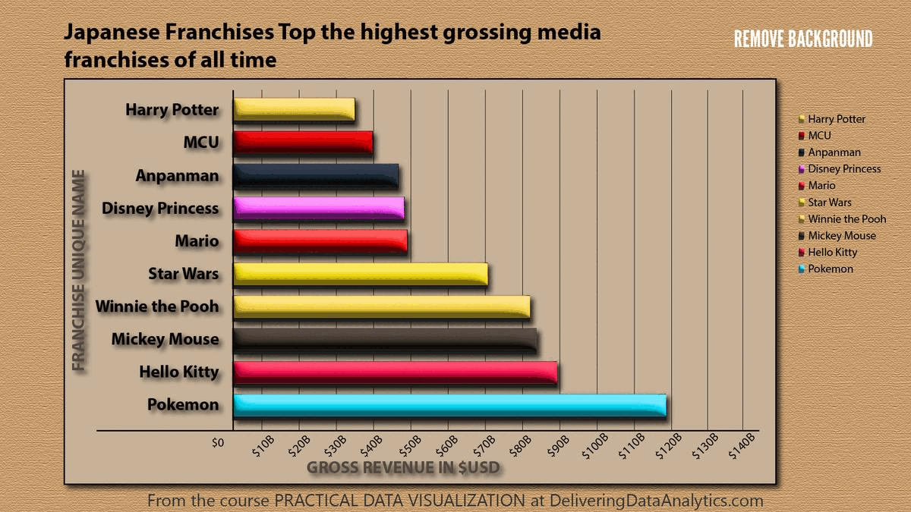

flowchart LR A[Global Filters] --> B[Main Charts] --> C[Detailed Views] D[Side Filters] --> B
Session 04: Dashboard Design & Performance
Strorytelling, Color Theory, UX Principles For Dashboard Design
tableau
Overview
This session focuses on how to design dashboards that are clear, beautiful, and performant.
Students learn the foundations of visual storytelling, color theory, UX principles, dashboard layout, and types of dashboards used in organizations.
By the end of the class, you should be able to design dashboards that tell a clear story, apply color and layout intentionally, choose the right dashboard type for your audience, and optimize performance for a smooth user experience.
- Visual storytelling principles
- Color theory fundamentals
- UX principles for dashboard design
- Dashboard layout best practices
- Types of dashboards (Operational, Tactical, Analytical, Strategic, Multifunctional / Self-Service)
- Interactive dashboards (Filters, Parameters, Highlights, Actions)
- Performance optimization (reduce extract size, optimize calculations, minimize load time)
Goal
Build an end-to-end business dashboard that:
- Uses consistent layout and color
- Includes filters, parameters, and highlights
- Uses actions (filter, highlight, URL, sheet swapping) to guide the story
Visual Storytelling Principles
\[\text{above all else, show the data}\]
During this session we have already covered the importance of storytelling in data visualization, discussing Tufte’s principles of clarity, integrity, and maximizing the data-ink ratio.
In this section, we will apply these principles specifically to dashboard design.
Minard’s Map of the 1812 Russian Campaign
Charles Joseph Minard’s famous visualization tells the tragic story of Napoleon’s march to Moscow:
- The width of the band represents the army size at each stage.
- The path shows geographic direction.
- The line below shows temperatures during the retreat.
Together, these layers merge six variables into one coherent narrative.

Why it matters:
- Shows that data can convey emotion and consequence, not just numbers.
- Embodies Tufte’s core message: “Above all else, show the data.”
- Demonstrates clarity, precision, and storytelling depth.
TipTufte’s Mindset for Dashboard Design
A single visual can tell a complete story if every element is meaningful.
Small Multiples | Comparing Stories Side by Side
Small multiples are sets of similar charts that share the same scale and layout.
Why they work:
- Make it easy to compare patterns across time, regions, or segments.
- Encourage exploration without overwhelming the viewer.

Use repetition and consistent design to show change and contrast across multiple views.
Tufte’s Mindset in Dashboard Design
- Focus on the narrative: Highlight insights, not decoration.
- Simplify: Remove any element that doesn’t support the story.
- Use comparison wisely: Small multiples are powerful for showing change.
- Be truthful: Avoid distortion in axes, scales, and annotations.
- Layer context: Use time, geography, and value together when they clarify the story (like Minard’s map).

Color Theory Fundamentals
Color is Deceptive
Color perception is context-dependent:
- The same color may appear
lighter/darkerdepending on its background.
- Lighting, screen quality, and surrounding colors influence perception.
When designing dashboard palettes, always consider:
- Context: background, other visuals
- Audience: accessibility, color vision
- Goal: of the visualization
highlightvsneutraltone

Understanding the Color Wheel
The color wheel is a tool for understanding relationships between colors and building harmonious palettes.
It organizes:
- Primary colors: red, blue, yellow
- Secondary colors: green, orange, purple
- Tertiary colors: combinations of primary + neighboring secondary (e.g., blue-green)

You can experiment with palettes using tools like the Adobe Color Wheel.
- Primary colors: Basic building blocks; cannot be created by mixing (red, blue, yellow).
- Secondary colors: Mixes of two primaries (green, orange, purple).
- Tertiary colors: Primary + neighboring secondary (yellow-orange, blue-green, red-purple).
Tertiary colors give more nuance and flexibility in dashboard palettes.
Color Harmony Schemes for Dashboards
Understanding color relationships helps you create balanced, readable dashboards.
Monochromatic Scheme
- Variations of a single hue (tints, shades, tones).
- Very cohesive, calm, and professional.
- Ideal for minimalist dashboards and background colors.

Analogous Scheme
- Uses colors next to each other on the wheel.
- Creates smooth, natural transitions.
- Works well for gradients or multi-series charts with subtle differences.

Complementary Scheme
- Colors opposite each other on the wheel.
- High contrast and strong visual energy.
- Great for highlighting key metrics or “good vs bad” signals.

Compound Scheme
- Mix of two or more non-adjacent colors.
- Often forms a rectangle or square on the color wheel.
- Balances variety and harmony.

Tetradic Scheme
- Uses four colors evenly spaced on the wheel.
- Very vibrant and expressive.
- Should be used carefully to avoid visual overload.

Design Principles for Color in Dashboards
Effective dashboards combine color harmony, functionality, readability, consistency, and accessibility.
Color Harmony
Choose colors that work well together and reflect the brand or context.
Limit the number of hues; vary intensity instead.
Functionality
Color should:
- Guide attention
- Signal status (e.g., red vs green)
- Help group related elements
Every color should have a clear role.
Readability
Use color to support comprehension, not to decorate.
Semantic example:
- Green → growth, success, “good”
- Red → decline, risk, “bad”
Simplicity Through Consistency
- Reuse the same colors for the same concepts across dashboards.
- Too many colors reduce clarity and create cognitive overload.
Accessibility
Design for users with color vision deficiencies:
- Do not rely on color alone to encode information.
- Ensure strong contrast between foreground and background.
- Test palettes with tools like Coblis.
UX Principles for Dashboard Design
This section summarizes 7 key UX principles for effective dashboards.
1. User-Centricity
Design for specific users and use cases, not for “everyone”.
Ask:
- Who is my audience? (role, data literacy, time)
- What decisions will they make with this dashboard?
- Do they need a quick overview, detailed analysis, or both?
Analysts may want detail and complexity; executives prefer clarity and summaries.
2. Usefulness
A dashboard is only valuable if it supports real decisions or tasks.
Ask:
- Is this dashboard truly needed?
- Does it replace or improve existing workflows (Excel decks, manual reports)?
- Which questions does it answer?
Avoid “dashboard for the sake of dashboard”.
3. Credibility
Users must trust your dashboard.
- Validate data sources.
- Show time stamps or update frequency.
- Avoid misleading charts and titles.

4. Consistency
Consistency makes dashboards predictable and intuitive.
Types:
- Visual: Same colors, fonts, line styles.
- Functional: Interactions (clicks, hovers) behave similarly.
- Naming: Metrics and categories are named consistently.
- Contextual: Align with brand guidelines.

5. Clarity
\[\text{Less is more.}\]
Use Tufte’s data-ink ratio:
- Remove decorative elements and clutter.
- Keep text short and direct.
- Emphasize the most important metrics first.

6. Hierarchy
Visual hierarchy guides the eye through the dashboard.
Use:
- Position: (
top-leftis most prominent)
- Size: (
big = important)
- Contrast: (
boldvssubtle)
- Grouping: (
containers,white space)
TipHierarchy Test
If you squint and still see the main message, your hierarchy works.
7. Accessibility
Make dashboards usable for everyone:
- Use clear fonts (
10–12 pt+).
- Keep layouts simple.
- Don’t rely solely on tooltips or hover for important info.
- Test contrast and color palettes.
Resource: Dataviz Design Checklist
Dashboard Layout Best Practices
Using Layout Containers in Tableau
Containers help you organize, align, and control spacing of dashboard elements.
They are the foundation of a clean and scalable dashboard design.
In tableau there are two types of layout containers:
- Horizontal containers: arrange elements side by side (used for columns or comparisons).
- Vertical containers: stack elements top to bottom (used for sections or storytelling).
1. Adding a Layout Container
- Drag a Vertical or Horizontal Container from the Dashboard pane onto the canvas.
- By default, containers are tiled and snap into position.
- Hold Shift while dragging to create a floating container.
- Apply a temporary background color to visually identify container boundaries during development.
Best practice:
- Start with a main vertical container as the base structure of the dashboard.
- Build all other elements inside it.
2. Container Structure
Containers define the layout hierarchy of the dashboard.
- Single-level containers
- Contain multiple elements in one direction
- Suitable for simple layouts
- Contain multiple elements in one direction
- Nested containers
- Containers placed inside other containers
- Enable complex layouts (e.g., sidebar + main content area)
- Containers placed inside other containers
Best practice:
- Limit nesting to 2–3 levels maximum to avoid complexity and performance issues.
3. Adding Elements
- Use Blank objects first to define spacing and layout structure.
- Replace blanks with:
- Worksheets
- Text objects
- Images or icons
- Worksheets

Why use blanks:
- Helps create consistent spacing
- Prevents layout shifts when adding content
Best practice:
- Build layout structure first → then populate with visuals.
4. Orientation and Placement Logic
- Drop on left/right edge → horizontal alignment
- Drop on top/bottom edge → vertical alignment
- Drop in the center → stacked inside container
Best practice:
- Use blue placement indicators to control layout precisely.
5. Fitting Visualizations
- Fit Entire View → responsive charts
- Fit Width / Height → controlled resizing
- Standard → fixed size
 |
 |
 |
|---|---|---|
| Fit Entire View | Fixed Width/Height | Distribute Content |
Additional:
- Use Distribute Evenly for equal spacing
- Use Fixed size when consistency is required
6. Padding and Spacing
- Inner padding → space inside container
- Outer padding → space between elements
Best practice:
- Keep consistent spacing (
4–20 px) across the dashboard.
7. Scaling Options
- Fixed → consistent size (best for presentations)
- Range → adaptive within limits
- Automatic → fills screen (requires testing)
8. Scrollable Dashboards
- Set dashboard height smaller than content
- Use a vertical container
- Tableau adds scroll automatically
Best practice:
- Place key KPIs at the top
- Avoid multiple scroll areas
9. Tiled vs Floating Layout
- Tiled:
- Structured and responsive
- Recommended for main layout
- Structured and responsive
- Floating:
- Free positioning
- Used for KPIs, buttons, overlays
- Free positioning
Best practice:
- Tiled for structure
- Floating for enhancements
10. Dashboard Grid Planning
- Define structure before building
- Choose layout type:
- Top → Revenue, Orders, Customers (KPIs)
- Middle → Sales trend + Category comparison
- Bottom → Detailed table

11. Visual Hierarchy
Visual hierarchy determines how users scan and understand your dashboard.
A well-designed hierarchy ensures that users immediately focus on the most important information.
- Size indicates importance
- Larger elements attract more attention
- Use larger containers for KPIs and key charts
- Larger elements attract more attention
- Position matters
- Top and top-left areas are viewed first
- Place critical insights (KPIs, main trends) at the top
- Top and top-left areas are viewed first
- Grouping related elements
- Place related charts within the same container
- Use proximity to indicate logical relationships
- Example: KPIs grouped in one row, category charts grouped together
- Place related charts within the same container
- Use of white space
- Space between elements improves readability
- Prevents visual clutter
- Helps separate sections clearly
- Space between elements improves readability
- Visual flow: Design dashboards to follow a natural reading pattern:
- Top → summary
- Middle → analysis
- Bottom → details
- Top → summary
Best practice:
- Users should understand the dashboard in 3–5 seconds
- Avoid competing elements of equal importance
12. Consistency Guidelines
Consistency ensures that dashboards are professional, predictable, and easy to use.
Key areas of consistency:
- Alignment
- Align all objects to a grid
- Avoid uneven edges or misaligned containers
- Align all objects to a grid
- Spacing
- Maintain equal spacing between elements
- Use consistent padding values across the dashboard
- Maintain equal spacing between elements
- Typography
- Use consistent font family
- Define hierarchy:
- Title (largest)
- Section headers
- Labels and annotations
- Title (largest)
- Use consistent font family
- Color usage
- Use a consistent color palette
- Assign meaning to colors (e.g., red = decrease, green = increase)
- Avoid unnecessary color variation
- Use a consistent color palette
- Container styling
- Keep consistent:
- Background colors
- Border styles
- Corner radius (if using rounded corners)
- Background colors
- Keep consistent:
Best practice:
- Create a design standard and reuse it across all dashboards
- Consistency reduces cognitive load for users
13. Performance Considerations
Layout and design decisions directly affect dashboard performance.
Key factors:
- Nested containers
- Deep nesting increases rendering complexity
- Makes layout harder to manage
- Deep nesting increases rendering complexity
- Floating objects
- Require additional positioning calculations
- Can slow down rendering, especially when overused
- Require additional positioning calculations
- Number of visuals
- Each worksheet generates a query
- More charts = longer load time
- Each worksheet generates a query
- High mark count
- Charts with many marks take longer to render
- Interactive elements
- Filters and actions trigger additional queries
Best practices:
- Keep layouts simple and structured
- Limit dashboard to essential views
- Use summary views instead of raw-level data
- Optimize heavy charts (aggregation, filtering)
14. Placement of Interactive Elements
Proper placement of interactive components improves usability and user flow.
Guidelines:
- Top section (global controls)
- Date filters
- Global parameters
- High-level selectors
- Date filters
- Side panels (detailed filters)
- Category filters
- Segment selectors
- Drill-down options
- Category filters
- Near related visuals
- Action filters
- Highlight actions
- Context-specific controls
- Action filters
- Logical grouping
- Group filters together
- Avoid scattering controls across the dashboard
- Group filters together
Best practices:
- Place controls where users expect them
- Keep interaction close to the data it affects
- Minimize unnecessary user movement across the dashboard
- Use filter actions instead of too many quick filters
- Ensure interactive elements are intuitive and clearly labeled
15. Rounded Corners (Tableau 2026.1)
Tableau 2026.1 introduces rounded corners for containers, enabling modern dashboard design.
Rounded corners:
- Replace sharp edges with smooth curved corners
- Improve visual aesthetics and readability
TipHow to Apply
- Select a container
- Open the Layout pane
- Adjust corner radius in border/shading settings
Best Practices
- Use consistent radius across dashboard
- Combine with:
- Background color
- Inner padding
- Background color
Recommended values:
5–10 px→ subtle
12–20 px→ card-style design
Use Cases
- KPI cards
- Filter panels
- Section containers
16. Common Layout Mistakes
- Overcrowded dashboards
- Misaligned elements
- Inconsistent spacing
- Too many floating objects
- Multiple scroll areas
Types of Dashboards
Following Stephen Few, we classify dashboards by function:
- Operational
- Tactical
- Analytical
- Strategic
- Multifunctional / Self-Service
Each serves a different decision-making level.
Operational Dashboards
Question: “What is happening right now?”
- Purpose: Monitor day-to-day operations and detect issues as they occur.
- Audience: Frontline staff, operations teams, call center supervisors.
- Example: Telecom operations dashboard with uptime, call drop rate, open tickets.
Common visuals:
- KPI cards with thresholds
- Gauges / bullet charts
- Real-time tables and alerts

Tactical Dashboards
Question: “How are we performing against our goals?”
- Purpose: Track short- and mid-term performance vs targets.
- Audience: Team leads, department heads, project managers.
- Example: Sales dashboard tracking regional results vs monthly targets.
Common visuals:
- Variance-to-target bars
- Trend lines by month/quarter
- Progress bars by region/team

Analytical Dashboards
Question: “Why is this happening?”
- Purpose: Explore data deeply, detect patterns, and understand root causes.
- Audience: Data analysts, BI teams, advanced users.
- Example: Churn dashboard showing which segments are at higher risk and why.
Common visuals:
- Heatmaps
- Scatter plots
- Cohort charts
- Drillable tables

Strategic Dashboards
Question: “Where are we heading?”
- Purpose: Provide a high-level view of organizational performance and strategy.
- Audience: Executives, directors, board members.
- Example: Executive dashboard with revenue, profitability, market share, and satisfaction over time.
Common visuals:
- KPI scorecards
- Trend lines & forecasts
- High-level maps and summaries

Multifunctional Dashboards
Some dashboards combine elements from several types.
Purpose: Allow users to access multiple levels of insight in one place.
Example:
- Top section → Overview (strategic KPIs + operational health).
- Lower sections → Detailed analysis (trends, breakdowns, drill-downs).
Best practice: design these as scrollable dashboards with clear sections.

Dashboard Type Summary
| Type | Question | Audience | Update Frequency | Focus | Example KPI |
|---|---|---|---|---|---|
| Operational | What’s happening now? | Frontline teams | Real-time | Efficiency | Average handling time |
| Tactical | Are we meeting our goals? | Managers | Weekly / Monthly | Performance | Sales vs target |
| Analytical | Why is this happening? | Analysts | On-demand | Insight & causes | Churn drivers |
| Strategic | Where are we heading? | Executives | Monthly / Quarterly | Outcomes | Revenue growth |
Tableau Dashboard Creation
In Tableau, a Dashboard is a workspace that combines multiple worksheets, filters, legends, and interactive components into a single analytical interface. Dashboards allow analysts to present different perspectives of data in one place and enable users to explore insights through interaction.
Dashboard creation involves designing the layout, responsiveness, visual formatting, and interactivity of visualizations so users can easily interpret and explore the data.
When creating dashboards, analysts configure:
- Dashboard size and responsiveness
- Layout containers and object positioning
- Dashboard objects
- Visual formatting and styling
- Interactive dashboard actions
A well-designed dashboard enables users to quickly identify patterns, compare metrics, and drill into detailed insights.
Tableau Dashboard Interface Sections
The Tableau Dashboard workspace is divided into several sections that help analysts
- design layouts
- add visualizations
- manage dashboard components.

1. Dashboard Canvas
The Dashboard Canvas is the central workspace where the dashboard is built.
When a dashboard is empty, Tableau displays the message:
Drop sheets hereThis area is used to:
- Place worksheets
- Arrange visualizations
- Add filters and legends
- Organize layout containers
- Design the final dashboard layout
Worksheets are dragged from the Sheets panel and dropped into this canvas.
2. Dashboard Settings Panel
The Dashboard Settings panel allows users to configure the overall dashboard properties.
Device Layout
Device layouts allow dashboards to be optimized for different screen types.
Options include:
- Default (Desktop layout)
- Phone layout
- Device Preview
This ensures dashboards remain readable across different devices.
Dashboard Size
The Size option controls the overall dimensions of the dashboard.
Desktop Browser (1000 × 800)Tableau provides three size options.
| Size Mode | Description |
|---|---|
| Automatic | Dashboard resizes according to screen size |
| Fixed Size | Dashboard maintains constant dimensions |
| Range | Dashboard scales between minimum and maximum sizes |
3. Sheets Panel
The Sheets panel lists all worksheets available in the workbook.
Worksheets represent visualizations such as:
- charts
- tables
- maps
- KPI indicators
- cohort analysis views
To add a worksheet to the dashboard:
- Drag the worksheet from the Sheets panel
- Drop it onto the Dashboard Canvas
Multiple worksheets can be combined to create a complete analytical dashboard.
4. Objects Panel
The Objects panel contains elements that help structure dashboards and add interactivity. These objects appear in the lower left part of the Dashboard pane.
Dashboard objects help organize the layout, add information, and enable interaction.
5. Layout Panel
The Layout panel allows configuration of properties for the selected dashboard object.
Properties include:
| Property | Description |
|---|---|
| Position | X and Y coordinates |
| Size | Width and height |
| Border | Border styling |
| Background | Background color |
| Corner Radius | Rounded container corners |
| Padding | Space around objects |
These settings allow precise control of dashboard layout.
6. Item Hierarchy
The Item Hierarchy panel displays the structure of objects within the dashboard.
Example structure:
Dashboard
Tiled
Blank
Horizontal ContainerThe hierarchy panel helps users:
- understand dashboard structure
- manage nested containers
- select objects within complex layouts

Layout Containers
Containers are the backbone of dashboard design.
They allow multiple objects to be grouped together and aligned properly.
| Container | Description |
|---|---|
| Horizontal Container | Arranges objects side-by-side |
| Vertical Container | Stacks objects vertically |
Containers can hold:
- worksheets
- text
- images
- other containers
Containers support advanced features such as:
- Show/Hide buttons
- Dynamic Zone Visibility (introduced in newer Tableau versions)
This allows dashboards to show or hide entire sections depending on user interaction.
Text Object
The Text object is a simple text box used to display information.
Common uses include:
- Dashboard titles
- Section headers
- Explanatory notes
- Footnotes
- Dynamic labels
Text objects can also be dynamic by inserting parameter values.
Example use:
If a dashboard allows selecting a custom date range, the selected start and end dates can be inserted into the text box to display the current filter range.
Image Object
The Image object is one of the most versatile dashboard objects.
Images can be used for:
- Company logos
- Navigation buttons
- Background images
- Custom icons
- Alerts or visual indicators
Images can be linked to:
- Local files
- Image URLs
Images can also function as navigation buttons by linking them to URLs or dashboards.
This makes them useful for creating custom interactive interfaces.
Blank Object
The Blank object is an empty dashboard element.
Although simple, it is extremely useful for layout design.
Blank objects can be used to:
- Add white space
- Create separators
- Improve alignment
- Hide dashboard elements
Blank objects can be colored, resized, or used as layout placeholders.
Extension Object
The Extension object allows third-party developers to add additional functionality to Tableau dashboards.
Examples of extensions include:
- custom visualizations
- advanced formatting tools
- embedded code editors
- custom styling options
Extensions can be downloaded from Tableau Exchange and added to dashboards.
There are two types of extensions:
| Type | Description |
|---|---|
| Sandboxed | Hosted securely by Tableau |
| Network-enabled | Can access external systems |
When using network-enabled extensions, it is important to review data security settings.
Web Page Object
The Web Page object functions as a mini web browser within the dashboard.
It can display:
- external websites
- documentation
- embedded applications
- maps
Web Page objects can be static or dynamic.
Dynamic web pages can update based on URL actions triggered by user interaction.
Download Object
The Download object allows users to export data from dashboards.
Export options include:
| Export Type | Description |
|---|---|
| Crosstab | Export data table (Server / Cloud only) |
| Image | Export dashboard as PNG |
| Export workbook or dashboard | |
| PowerPoint | Export dashboards as slides |
This feature is often required by stakeholders who need data snapshots for reporting.
Add Filters Extension
The Add Filters extension allows dashboard users to choose which filters they want to display.
Instead of creating multiple dashboard versions, users can dynamically select filters relevant to them.
Example:
Different users may want different filters:
- one group filters by date and location
- another group filters by sales and profit
The Add Filters extension allows each user group to configure filters themselves.
Dashboard Actions
Dashboard Actions allow visualizations to interact with each other.
Actions are configured using:
Dashboard → Actionsflowchart LR A[User Interaction] --> B[Dashboard Action] B --> C[Filter Action] B --> D[Highlight Action] B --> E[Navigation Action] B --> F[Parameter Action] B --> G[URL Action] B --> H[Set Action]
Filter Actions
Filter actions allow one worksheet to filter another worksheet.
Example workflow:
- User selects a category in a chart
- Other charts update to show related data
Highlight Actions
Highlight actions emphasize related data across visualizations without filtering the data.
URL Actions
URL actions allow dashboards to open external web resources.
Examples include:
- linking to product pages
- connecting to external systems
Parameter Actions
Parameter actions allow interactions to update parameter values dynamically.
Set Actions
Set actions allow users to dynamically modify sets through interaction.
This enables:
- dynamic segmentation
- interactive comparisons
- scenario analysis
Retail Sales Analysis Dashboard | Tableau Build Guide
Dashboard Goal
The purpose of this dashboard is to analyze retail business performance using:
- Sales trends
- Customer behavior
- Product performance
- Retention analysis
- RFM segmentation
- Geographic analysis
- Time-based purchasing behavior
The dashboard should help business users answer:
- Are sales increasing over time?
- Which products generate the highest revenue?
- Which customers are most valuable?
- How frequently do customers purchase?
- Which customer segments are most important?
- How strong is customer retention?
- Which countries generate the most sales?
The dashboard should feel:
- Modern
- Minimalistic
- Executive-level
- Professional
- Presentation-ready
Dataset Overview
The Tableau workbook contains multiple analytical worksheets focused on retail performance analysis.
Main analytical areas include:
| Analysis Area | Business Purpose |
|---|---|
| KPI Section | High-level business overview |
| Sales Trend | Revenue trend analysis |
| Geographic Analysis | Country-level sales analysis |
| Product Performance | Best-selling product analysis |
| Customer Analysis | Customer value analysis |
| RFM Analysis | Customer segmentation |
| Cohort Analysis | Retention analysis |
| Time Analysis | Purchase behavior analysis |
Recommended Dashboard Structure
flowchart TB A[KPI Section] B[Sales Trend] C[Sales by Country] D[Top Products] E[Customer Analysis] F[RFM Analysis] G[Cohort Retention] A --> B A --> C A --> D B --> E C --> F D --> G
Recommended Dashboard Size
| Element | Recommendation |
|---|---|
| Dashboard Size | 1400 × 900 |
| Layout | Tiled |
| Device Layout | Desktop |
| Outer Padding | 20–30 px |
| Space Between Containers | 10–20 px |
A fixed dashboard size helps maintain alignment consistency and improves presentation quality.
Dashboard Visual Hierarchy
The dashboard should follow a clear visual hierarchy.
The user should first see:
- KPI Section
- Sales Trends
- Geographic and Product Analysis
- Customer Analysis
- Cohort and Retention Analysis
The layout should naturally guide the user from summary insights into deeper analytical exploration.
Step 1 | Build KPI Section
Purpose of KPI Section
The KPI section provides an instant overview of overall business health.
The KPI cards should be positioned at the top of the dashboard because they establish the business context before deeper analysis begins.
Recommended KPIs
| KPI | Business Meaning |
|---|---|
| Total Revenue | Total generated sales |
| Total Orders | Number of transactions |
| Total Customers | Unique customer count |
| AVG Revenue per Customer | Customer value |
| Growth % | Performance comparison |
Recommended KPI Layout
flowchart LR
A[Revenue KPI]
B[Orders KPI]
C[Customers KPI]
D[AVG Revenue KPI]
A --> B
B --> C
C --> D
KPI Card Design Rules
Each KPI card should contain:
- Large KPI value
- KPI subtitle
- Growth percentage
- Previous period comparison
- Directional indicator
The KPI value should always be visually dominant.
KPI Color Rules
| Situation | Color |
|---|---|
| Positive Growth | Green |
| Negative Growth | Red |
| Neutral | Gray |
Use directional arrows to reinforce performance visually.
KPI Card Size Recommendations
| Element | Recommendation |
|---|---|
| Width | 240–280 px |
| Height | 120–150 px |
| Inner Padding | 10–15 px |
| Space Between Cards | 15–20 px |
All KPI cards should maintain identical sizing for visual consistency.
Recommended Typography Hierarchy
| Element | Font Size | Weight |
|---|---|---|
| Dashboard Title | 24–32 px | Bold |
| Section Titles | 16–20 px | Semi-bold |
| KPI Values | 28–40 px | Bold |
| KPI Labels | 11–14 px | Regular |
| Growth % | 12–16 px | Semi-bold |
Recommended Tableau Fonts
| Font | Usage |
|---|---|
| Tableau Book | Default dashboard text |
| Tableau Medium | KPI values and titles |
| Arial | Universal readability |
| Verdana | Small dashboard labels |
Recommended Google Fonts
| Font | Style |
|---|---|
| Inter | Modern KPI typography |
| Roboto | Clean dashboard labels |
| Open Sans | Professional readability |
| Montserrat | Strong dashboard titles |
| Source Sans 3 | Analytical styling |
Step 2 | Build Sales Trend Analysis
Purpose of Sales Trend Chart
The Sales Trend chart helps users understand how business performance changes over time.
This is usually the primary analytical chart after the KPI section.
The chart should help users identify:
- Growth trends
- Declines
- Seasonality
- Performance spikes
- Long-term business direction
Recommended Chart Type
Use:
- Line Chart
Optional enhancements:
- Dual-axis line chart
- Trend line
- Moving average
Recommended Sales Trend Layout
flowchart TB A[Date] B[Revenue Trend] C[Growth Analysis] A --> B B --> C
Sales Trend Design Rules
Do:
- Highlight latest point
- Use minimal gridlines
- Use one dominant color
- Keep labels minimal
- Maintain smooth visual flow
Avoid:
- Too many colors
- Heavy formatting
- Excessive labels
- Too many trend lines
Recommended Sales Trend Styling
| Element | Recommendation |
|---|---|
| Line Width | Medium |
| Gridlines | Soft |
| Labels | Minimal |
| Colors | Single dominant color |
Step 3 | Build Geographic Analysis
Purpose of Geographic Analysis
The geographic analysis section helps users identify which countries or regions generate the highest revenue.
This analysis helps answer:
- Which markets perform best?
- Which regions need attention?
- Where are business opportunities concentrated?
Recommended Chart Types
Use:
- Filled Map
- Symbol Map
- Horizontal Bar Chart
Geographic Analysis Design Rules
If using maps:
- Use soft color gradients
- Highlight key regions
- Keep labels minimal
If using bars:
- Sort descending
- Show regional contribution %
Maps should support analysis rather than decoration.
Step 4 | Build Product Performance Analysis
Purpose of Product Analysis
The product section identifies:
- Best-selling products
- Low-performing products
- Revenue contribution
- Product demand
This section helps stakeholders identify opportunities and risks quickly.
Recommended Chart Types
Use:
- Horizontal Bar Charts
- Highlight Tables
- Treemaps
Product Analysis Design Rules
Do:
- Sort descending
- Highlight top products
- Keep labels readable
- Use consistent colors
Avoid:
- Too many products displayed
- Tiny unreadable labels
- Excessive color variations
Step 5 | Build Customer Analysis
Purpose of Customer Analysis
The customer section helps explain customer behavior and customer value.
This analysis should help answer:
- Who are the most valuable customers?
- How frequently do customers purchase?
- Which customer segments are strongest?
Recommended Customer Metrics
| Metric | Purpose |
|---|---|
| Customer Count | Customer growth |
| Average Order Value | Customer quality |
| Revenue per Customer | Customer value |
| Purchase Frequency | Engagement |
Recommended Chart Types
Use:
- Bar Charts
- Scatter Plots
- Donut Charts
Step 6 | Build RFM Analysis
Purpose of RFM Analysis
RFM stands for:
- Recency
- Frequency
- Monetary
This analysis helps identify customer quality and engagement.
RFM Definitions
| Metric | Meaning |
|---|---|
| Recency | How recently customer purchased |
| Frequency | How often customer purchases |
| Monetary | How much customer spends |
Recommended RFM Visuals
Use:
- Heatmaps
- Scatter Plots
- Segment Tables
Step 7 | Build Cohort Retention Analysis
Purpose of Cohort Analysis
The cohort section helps understand customer retention over time.
This analysis answers:
- How many customers return?
- How quickly do customers churn?
- Which acquisition periods perform best?
Recommended Cohort Visual
Use:
- Heatmap
The heatmap should show retention percentage over time.
Step 8 | Build Time-Based Behavioral Analysis
Purpose of Time Analysis
This section helps identify purchasing behavior patterns.
Possible analyses:
- Sales by Weekday
- Sales by Hour
- Peak purchasing periods
Recommended Chart Types
Use:
- Heatmaps
- Line Charts
- Bar Charts
Filter Design Rules
Recommended Filters
Use:
- Date
- Country
- Product Category
- Customer Segment
Recommended Filter Placement
Filters should appear:
- Left side
- Top navigation area
Filters should remain compact and easy to use.
Recommended Tableau Features
Students Should Practice
- Parameters
- Dynamic Titles
- Dashboard Actions
- Highlight Actions
- Filter Actions
- Conditional Formatting
- Tooltips
- Containers
- Calculated Fields
Important Tableau Functions
| Function | Purpose |
|---|---|
| SUM() | Aggregation |
| COUNTD() | Unique count |
| IF | Conditional logic |
| DATEADD() | Date shifting |
| DATETRUNC() | Date grouping |
| WINDOW_SUM() | Table calculations |
| RANK() | Ranking |
| FIXED LOD | Stable aggregation |
Growth Percentage Calculation
(
SUM([Current Period Revenue]) -
SUM([Previous Period Revenue])
)
/
SUM([Previous Period Revenue])Container Structure
flowchart TB A[Main Vertical Container] A --> B[KPI Horizontal Container] A --> C[Middle Analytics Section] A --> D[Bottom Supporting Charts] C --> E[Sales Trend] C --> F[Geographic Analysis] C --> G[Product Analysis]
Dashboard Design Principles
A professional dashboard should:
- Guide user attention
- Prioritize important insights
- Reduce clutter
- Maintain spacing consistency
- Support storytelling
- Simplify decision-making
The dashboard should feel analytical and structured rather than visually crowded.
Common Dashboard Mistakes
Avoid:
- Too many chart types
- Excessive colors
- Tiny labels
- Misaligned containers
- Heavy borders
- Decorative visualizations
- Overcrowded layouts
Every dashboard element should have a clear analytical purpose.
Final Dashboard Checklist
Before publishing:
- KPI section visually dominant
- Charts aligned properly
- Colors consistent
- Font hierarchy clear
- Filters functional
- Tooltips readable
- Interactions working
- Dashboard spacing balanced
- Storytelling understandable
- Dashboard presentation-ready
Retail Sales Customer Analysis Dashboard | Tableau Build Guide
Dashboard Goal
The purpose of this dashboard is to analyze customer behavior, customer quality, purchasing patterns, and long-term customer value within the retail business.
Unlike a general sales dashboard, this dashboard focuses specifically on understanding customers rather than transactions alone.
The dashboard should help stakeholders answer important business questions such as:
- Who are the most valuable customers?
- Which customer segments generate the highest revenue?
- How frequently do customers purchase?
- Which customers are becoming inactive?
- Which customer groups should be targeted with marketing campaigns?
- How strong is customer retention over time?
- Which customer behaviors indicate loyalty?
This dashboard is especially important for:
- Marketing teams
- CRM teams
- Retention teams
- Product managers
- Business executives
The dashboard should feel:
- Analytical
- Executive-level
- Clean
- Structured
- Interactive
- Modern
- Presentation-ready
Recommended Dashboard Structure
The dashboard should be divided into several analytical layers.
The user should first understand high-level customer KPIs and then move deeper into segmentation, behavioral analysis, and retention insights.
flowchart TB A[Customer KPI Section] B[Customer Growth Trend] C[Customer Segmentation] D[Revenue per Customer] E[Frequency Analysis] F[RFM Analysis] G[Cohort Retention] A --> B A --> C A --> D B --> E C --> F D --> G
This structure creates a natural analytical storytelling flow.
Recommended Dashboard Size
| Element | Recommendation |
|---|---|
| Dashboard Size | 1400 × 900 |
| Layout Type | Tiled |
| Device Layout | Desktop |
| Outer Padding | 20–30 px |
| Space Between Containers | 10–20 px |
A consistent dashboard size improves alignment, responsiveness, and presentation quality.
Tiled layouts are recommended because they maintain structural consistency and reduce misalignment issues.
Dashboard Visual Hierarchy
The dashboard should guide users from summary-level insights into deeper customer analysis.
The most important information should always appear first.
Recommended hierarchy:
- Customer KPI Section
- Customer Growth Trends
- Segmentation Analysis
- Revenue and Frequency Analysis
- Retention and Cohort Analysis
The KPI section should immediately capture user attention because it establishes overall customer health.
Step 1 | Customer KPI Section
Purpose of Customer KPI Section
The KPI section provides an instant overview of customer performance and customer quality.
This section helps users quickly evaluate whether the customer base is:
- Growing
- Declining
- Becoming more valuable
- Becoming more engaged
- Retaining successfully
The KPI cards should remain visually dominant because they establish the analytical context for the rest of the dashboard.
Recommended Customer KPIs
| KPI | Business Meaning |
|---|---|
| Total Customers | Number of unique customers |
| AVG Revenue per Customer | Customer monetary value |
| Purchase Frequency | Customer engagement level |
| Retention Rate | Customer loyalty |
| Customer Growth % | Acquisition trend |
Each KPI should answer a specific customer-related business question.
Recommended KPI Layout
flowchart LR A[Total Customers] B[AVG Revenue] C[Frequency] D[Retention Rate] A --> B B --> C C --> D
The KPI cards should be aligned horizontally because this improves readability and scanning speed.
KPI Design Rules
Each KPI card should contain:
- Large KPI value
- KPI subtitle
- Growth %
- Previous period comparison
- Directional indicator
The KPI value should always remain the most visually dominant element.
Supporting information such as growth percentage and comparisons should appear below the main KPI value.
KPI Color Rules
| Situation | Color |
|---|---|
| Positive Trend | Green |
| Negative Trend | Red |
| Neutral | Gray |
Colors should reinforce analytical meaning rather than act as decoration.
Green should communicate positive customer behavior, while red should indicate declining performance or potential churn risk.
Recommended KPI Card Dimensions
| Element | Recommendation |
|---|---|
| Width | 240–280 px |
| Height | 120–150 px |
| Inner Padding | 10–15 px |
| Space Between Cards | 15–20 px |
All KPI cards should maintain identical dimensions to preserve dashboard balance and visual consistency.
Recommended Typography Hierarchy
| Element | Font Size | Weight |
|---|---|---|
| Dashboard Title | 24–32 px | Bold |
| Section Titles | 16–20 px | Semi-bold |
| KPI Values | 28–40 px | Bold |
| KPI Labels | 11–14 px | Regular |
| Growth % | 12–16 px | Semi-bold |
| Axis Labels | 10–12 px | Regular |
Typography should improve readability and help users quickly identify the most important information.
Recommended Tableau Fonts
| Font | Usage |
|---|---|
| Tableau Book | Default dashboard text |
| Tableau Medium | KPI values and titles |
| Arial | Universal readability |
| Verdana | Small labels |
These fonts render consistently across Tableau dashboards and presentations.
Recommended Google Fonts
| Font | Style |
|---|---|
| Inter | Modern KPI typography |
| Roboto | Clean dashboard labels |
| Open Sans | Professional readability |
| Montserrat | Strong dashboard titles |
| Source Sans 3 | Analytical styling |
These fonts create a modern executive dashboard appearance.
Step 2 | Build Customer Growth Trend
Purpose of Customer Growth Analysis
This section helps users understand how the customer base evolves over time.
The goal is to identify:
- Growth acceleration
- Customer acquisition trends
- Seasonal behavior
- Declining customer activity
- Long-term customer trends
This analysis is important because customer growth is often a leading business performance indicator.
Recommended Chart Type
Use:
- Line Chart
Optional additions:
- Moving Average
- Trend Line
- Dual-axis comparison
Line charts are ideal because they clearly communicate change over time.
Customer Growth Design Rules
Do:
- Highlight latest point
- Use clean gridlines
- Maintain minimal labels
- Use one dominant color
- Keep trend visually smooth
Avoid:
- Too many trend lines
- Heavy formatting
- Excessive colors
- Overcrowded labels
The chart should emphasize readability and trend recognition.
Recommended Growth Trend Layout
flowchart TB A[Customer Count] B[Trend Analysis] C[Growth Direction] A --> B B --> C
The trend chart should appear directly below the KPI section because it extends the overall business story.
Step 3 | Build Customer Segmentation Analysis
Purpose of Segmentation Analysis
Customer segmentation divides customers into groups based on purchasing behavior and customer value.
This analysis helps businesses:
- Personalize marketing campaigns
- Identify high-value customers
- Detect inactive customers
- Improve customer targeting
- Increase retention
Segmentation transforms raw customer data into actionable business insights.
Recommended Customer Segments
| Segment | Meaning |
|---|---|
| Champions | Highly valuable customers |
| Loyal Customers | Frequent repeat purchasers |
| At Risk | Declining engagement |
| New Customers | Recently acquired |
| Inactive Customers | Low activity |
Each segment should have a clear business definition and analytical purpose.
Recommended Chart Types
Use:
- Donut Charts
- Bar Charts
- Treemaps
Each visualization should simplify understanding of customer distribution.
Segmentation Design Rules
Do:
- Use distinct colors
- Highlight important segments
- Limit total number of segments
- Maintain readable labels
Avoid:
- Too many segment categories
- Similar colors
- Dense visual layouts
Segmentation should remain simple enough for executives to interpret quickly.
Step 4 | Build Average Revenue per Customer Analysis
Purpose of Revenue per Customer Analysis
This section measures customer quality rather than only customer quantity.
A business may have many customers but low customer value.
This analysis helps answer:
- Which customers generate the most revenue?
- Which customer groups spend the most?
- Is customer value improving?
- Which segments should receive retention attention?
Customer value is often more important than customer count alone.
Recommended Chart Types
Use:
- Bar Charts
- Scatter Plots
- Boxplots
Scatter plots are especially useful for identifying high-value customer outliers.
Revenue Analysis Design Rules
Do:
- Highlight valuable customers
- Compare segments clearly
- Use minimal styling
- Maintain clean labels
Avoid:
- Excessive labels
- Overcrowded marks
- Too many simultaneous dimensions
The analysis should focus on identifying customer quality patterns.
Step 5 | Build Purchase Frequency Analysis
Purpose of Frequency Analysis
Frequency analysis measures how often customers purchase.
This section helps identify:
- Highly engaged customers
- Repeating customers
- One-time buyers
- Loyalty patterns
- Engagement decline
Purchase frequency is one of the strongest indicators of customer loyalty.
Recommended Chart Types
Use:
- Histograms
- Bar Charts
- Heatmaps
Histograms are useful for understanding purchase frequency distributions.
Frequency Analysis Design Rules
Do:
- Group frequencies logically
- Highlight repeat behavior
- Sort clearly
- Maintain simple formatting
Avoid:
- Too many bins
- Dense labels
- Visual clutter
The analysis should remain easy to scan and interpret.
Step 6 | Build RFM Analysis
Purpose of RFM Analysis
RFM analysis is one of the most important customer analytics techniques in retail analysis.
RFM evaluates customers based on:
- Recency
- Frequency
- Monetary Value
This helps identify the strongest and weakest customer groups.
RFM Definitions
| Metric | Meaning |
|---|---|
| Recency | How recently customer purchased |
| Frequency | How often customer purchases |
| Monetary | How much customer spends |
Customers with strong Recency, Frequency, and Monetary scores are typically the most valuable.
Recommended RFM Visuals
Use:
- Heatmaps
- Scatter Plots
- Segment Tables
Heatmaps work especially well because they reveal concentration and intensity patterns quickly.
RFM Design Rules
Do:
- Highlight high-value customers
- Use sequential color palettes
- Keep labels readable
- Simplify visual structure
Avoid:
- Excessive categories
- Complex color palettes
- Overcrowded visuals
The goal is to simplify customer prioritization.
Step 7 | Build Customer Retention Analysis
Purpose of Retention Analysis
Retention analysis helps understand long-term customer loyalty.
Retention analysis is critical because retaining customers is often cheaper than acquiring new customers.
This section should answer:
- How many customers return?
- Which cohorts retain best?
- When do customers churn?
- Which acquisition periods perform best?
Recommended Retention Visual
Use:
- Cohort Heatmap
The cohort heatmap should display retention percentages over time.
This allows users to quickly identify strong and weak retention patterns.
Retention Design Rules
Do:
- Use sequential color gradients
- Highlight strong cohorts
- Maintain readable labels
- Keep the structure clean
Avoid:
- Too many colors
- Excessive labels
- Strong saturated palettes
The heatmap should prioritize readability over decoration.
Recommended Cohort Layout
flowchart TB A[Cohort Month] B[Retention Rate] C[Customer Loyalty] A --> B B --> C
The layout should guide users naturally from acquisition cohorts into retention behavior.
Step 8 | Build Customer Behavioral Analysis
Purpose of Behavioral Analysis
Behavioral analysis identifies customer purchasing habits and shopping behavior.
Possible analyses include:
- Purchases by Hour
- Purchases by Weekday
- Peak shopping periods
- Seasonal behavior
Behavioral insights help businesses optimize campaigns, promotions, and operational planning.
Recommended Chart Types
Use:
- Heatmaps
- Line Charts
- Bar Charts
Heatmaps are especially useful for visualizing time-based purchasing intensity.
Behavioral Analysis Design Rules
Do:
- Highlight peak periods
- Use intuitive time ordering
- Keep color gradients simple
- Maintain clean spacing
Avoid:
- Overcrowded labels
- Too many simultaneous dimensions
- Complex formatting
The analysis should remain easy to interpret quickly.
Dashboard Actions Used in This Dashboard
Purpose of Dashboard Actions
Dashboard actions transform the dashboard from a static report into an interactive customer analytics application.
The dashboard actions help users:
- Explore customer behavior dynamically
- Filter related visualizations
- Navigate customer relationships
- Investigate customer segments
- Analyze retention patterns interactively
Well-designed actions improve analytical storytelling and user engagement.
Filter Actions Used
The dashboard uses Filter Actions to connect customer analysis visualizations together.
Example interactions:
- Clicking a customer segment filters KPI cards
- Selecting a cohort updates retention analysis
- Choosing a country filters customer charts
- Selecting an RFM segment updates frequency analysis
- Clicking a category filters revenue analysis
This creates a connected analytical workflow.
Recommended Filter Action Flow
flowchart LR A[User Selects Customer Segment] B[Dashboard Filters Applied] C[Related Charts Update] A --> B B --> C
This interaction structure improves dashboard usability and exploration.
Highlight Actions Used
Highlight actions emphasize selected customer groups while preserving surrounding analytical context.
Example use cases:
- Highlighting customer segments
- Emphasizing valuable customers
- Highlighting cohorts
- Focusing on retention groups
Highlight actions improve focus without hiding the rest of the data.
Parameter Actions Used
Parameter-based interactions improve dashboard flexibility.
Possible parameter interactions include:
- Switching customer metrics
- Changing time periods
- Selecting Top N customers
- Switching between Revenue and Frequency analysis
- Dynamically changing segmentation views
Parameters create a more customizable analytical experience.
Dashboard Action Design Principles
Dashboard actions should:
- Improve analytical exploration
- Support storytelling
- Reduce clutter
- Guide user attention
- Maintain intuitive interactions
The interactions should feel natural and easy to understand.
Dashboard Action Best Practices
Do:
- Keep interactions intuitive
- Maintain logical flow
- Clearly connect related charts
- Keep dashboard response fast
Avoid:
- Too many simultaneous actions
- Complex interaction chains
- Over-filtering dashboards
- Excessive navigation complexity
Dashboard actions should simplify analysis rather than create confusion.
Recommended Filters
Use:
- Date
- Customer Segment
- Country
- Product Category
Filters should remain compact and easy to use.
Recommended Tableau Features
Students should practice:
- Parameters
- Dynamic Titles
- Dashboard Actions
- Filter Actions
- Highlight Actions
- Tooltips
- Containers
- Calculated Fields
- Conditional Formatting
This dashboard should demonstrate both analytical thinking and Tableau technical skills.
Important Tableau Functions
| Function | Purpose |
|---|---|
| COUNTD() | Unique customer count |
| SUM() | Aggregation |
| IF | Conditional logic |
| RANK() | Ranking |
| WINDOW_SUM() | Table calculations |
| FIXED LOD | Stable aggregation |
These functions are commonly used in professional customer analytics dashboards.
Average Revenue per Customer Calculation
SUM([Revenue])
/
COUNTD([Customer ID])Purchase Frequency Calculation
COUNT([Order ID])
/
COUNTD([Customer ID])Container Structure
flowchart TB A[Main Vertical Container] A --> B[Customer KPI Section] A --> C[Growth and Segmentation] A --> D[Retention Analysis] C --> E[Customer Growth] C --> F[RFM Analysis] C --> G[Frequency Analysis]
Containers help maintain alignment and dashboard responsiveness.
Resources
GitHub
Tableau Course Code Repository for this session is available in the GitHub repository linked above. It includes:
- Tableau workbook with all examples
- Sample datasets